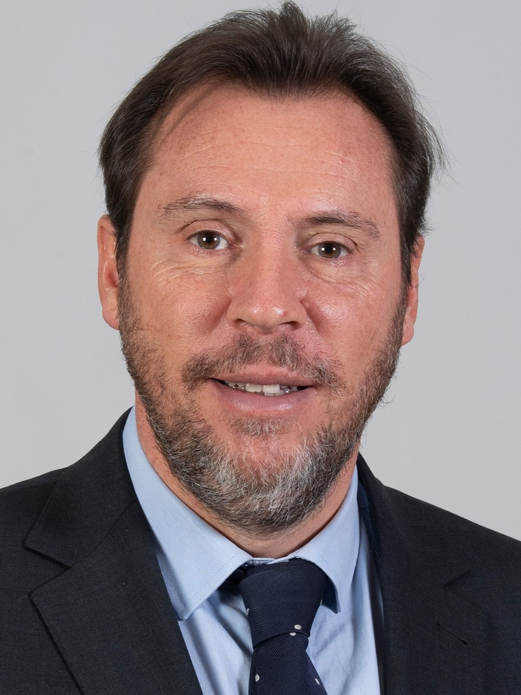

OKpolítico
OKpolíticoChoque de alta velocidad en Toledo deja decenas de muertos

La presidenta Claudia Sheinbaum informó que un mexicano sigue desaparecido tras el choque de dos trenes en Urda, Toledo, mientras 68 fallecieron y 180 resultaron heridos.
▶ Ver este video en YouTube y suscríbete
Actualización 13:33 h
El 28 de octubre de 2026, dos trenes de alta velocidad colisionaron cerca de Urda, en la provincia de Toledo, provocando 68 muertos y 180 heridos; entre los pasajeros había ocho mexicanos, de los que siete fueron dados de alta y uno, originario de Aguascalientes, sigue desaparecido.
Según la investigación preliminar, la causa se relaciona con un fallo del sistema de señalización LZB y una posible equivocación humana del centro de control de ADIF al autorizar la marcha del AVE mientras el tren Iryo permanecía detenido. El accidente ocurrió a escasos días de la campaña electoral española para las elecciones generales del 29 de noviembre, lo que ha intensificado la cobertura mediática.
Los actores clave son la presidenta Claudia Sheinbaum, quien anunció la situación desde el Palacio Nacional, la Secretaría de Relaciones Exteriores (SRE) y la Embajada de México en Madrid, que mantienen contacto con la familia del desaparecido, y las autoridades españolas, entre ellas el Ministerio de Transportes y la AITAT, encargada de la investigación técnica del siniestro.
Sheinbaum expresó sus condolencias y señaló que la Embajada había presentado una denuncia por desaparición, mientras la SRE confirmó que la familia del mexicano arribó a Madrid y recibió apoyo consular para seguir la búsqueda. Las autoridades locales continúan la investigación para determinar responsabilidades y localizar a la persona desaparecida.
El caso se suma a la presión sobre el gobierno español, que ha suspendido actos de campaña y ha declarado luto oficial. La AITAT seguirá analizando los registros de los trenes y la comunicación entre el centro de control y los maquinistas para esclarecer los fallos que originaron la tragedia.
Actualización 13:16 h
La presidenta Claudia Sheinbaum informó que un ciudadano mexicano continúa desaparecido tras un choque de trenes ocurrido en España. Según la Cancillería, los familiares de la persona afectada ya arribaron a Madrid para recibir el apoyo consular necesario y dar seguimiento al caso.
El accidente ferroviario ha sumido a España en un estado de luto, mientras las autoridades locales avanzan en la identificación de las víctimas mortales. El siniestro ha irrumpido en la agenda política del país, ya que coincide con el desarrollo de una campaña electoral.
Investigaciones preliminares buscan determinar las causas exactas del choque. Por su parte, sobrevivientes del accidente han narrado los momentos del impacto, describiendo la magnitud del desastre que ha dejado un saldo considerable de heridos y fallecidos.
El gobierno de México, a través de su representación diplomática en España, mantiene la coordinación con las autoridades españolas para localizar al ciudadano desaparecido. Se espera que la Cancillería brinde actualizaciones sobre el estado de las labores de búsqueda y rescate.
Actualización 11:53 h
El miércoles 28 de octubre de 2026 dos trenes de alta velocidad colisionaron en Urda, provincia de Toledo, provocando al menos 68 fallecidos y 180 heridos, de los que 21 están graves. Ocho mexicanos viajaban a bordo; siete fueron atendidos y dados de alta, mientras que un pasajero de 45 años originario de Aguascalientes sigue desaparecido.
Según el ministro de Transportes Óscar Puente, la causa inmediata fue la caída del sistema de señalización LZB y una serie de decisiones erróneas del controlador que, tras 17 minutos sin detectar la presencia del tren Iryo detenido, ordenó reanudar la marcha del AVE a velocidad normal, contraviniendo el protocolo de “a vista”.
El accidente involucró a los trenes AVE Madrid-Andalucía y al Iryo, con 397 y 147 pasajeros respectivamente, en una ruta muy utilizada durante la temporada de vacaciones. De los ocho connacionales, el desaparecido, Fernando de Jesús Calvillo Silva, viajaba en el vagón ocho del tren Madrid-Sevilla, según su familia.
La presidenta Claudia Sheinbaum expresó su pésame y confirmó la desaparición del mexicano, mientras la Secretaría de Relaciones Exteriores informó que la familia llegó a Madrid y está recibiendo apoyo consular y la Embajada ha presentado una denuncia ante la Guardia Civil. El ministro Puente calificó el suceso de “inexplicable” y reiteró que se investigará a fondo la cadena de fallos que permitió la colisión.
Las autoridades españolas continúan la investigación, revisando grabaciones y comunicaciones del centro de control. Renfe activó su plan de asistencia a víctimas y la representación mexicana mantiene contacto permanente con las autoridades locales para localizar al desaparecido y apoyar a los familiares.
Actualización 10:13 h
El miércoles 28 de octubre de 2026 dos trenes de alta velocidad colisionaron en Urda, municipio de la provincia de Toledo, provocando 69 fallecimientos, 39 hospitalizados y 70 denuncias de desaparición; entre los afectados había ocho mexicanos, de los que siete resultaron heridos y uno de Aguascalientes sigue desaparecido según informó la presidenta Claudia Sheinbaum.
Según el informe preliminar, el accidente se originó tras la caída del sistema de señalización LZB, que debía haber sido sustituido por el moderno ERTMS pero no se activó a tiempo; la falta de renovación del LZB había sido señalada tras el siniestro ferroviario de Adamuz en enero, que causó 46 muertos.
El suceso ocurre a menos de un mes de la convocatoria de elecciones generales para el 29 de noviembre de 2026, una fecha anunciada por el presidente Pedro Sánchez y que sitúa la campaña electoral en un contexto de creciente tensión política; el líder del Partido Popular, Alberto Núñez Feijóo, utilizó el accidente para criticar la gestión del Ejecutivo y amenazar con “dimitir en las urnas” si el gobierno no asume responsabilidades.
Feijóo acusó directamente al Gobierno de no haber renovado el sistema de seguridad, responsabilizando al ministro de Transportes Óscar Puente y al presidente Sánchez, mientras que el propio Sánchez reconoció la “confianza quebrada” en la alta velocidad y prometió una investigación exhaustiva. La presidenta expresó su pésame, confirmó la presencia de connacionales en los trenes y anunció que la Embajada en Madrid mantiene contacto permanente con los familiares del desaparecido.
El Ministerio de Transportes ha anunciado la apertura de una comisión de investigación y la posible suspensión temporal del servicio AVE Madrid-Barcelona para acelerar la remodelación de la línea; se prevé una auditoría independiente del sistema ferroviario y la sustitución definitiva del LZB antes de 2027, mientras las autoridades mexicanas continúan el seguimiento del caso del desaparecido.
Actualización 09:33 h
El 30 de octubre a las 08:53, un AVE de Renfe que salía de Madrid hacia Sevilla chocó con un tren Iryo detenido en Urda, Toledo, provocando la caída de varios vagones y 69 fallecidos (EFE, France24).
El choque se debió a la caída del sistema de señalización LZB, que obligó a ambos trenes a operar bajo el sistema alternativo ASFA, donde el AVE recibió señal verde (France24).
El accidente sigue a la tragedia de Adamuz y precede a las próximas elecciones generales, lo que ha intensificado la presión sobre el Gobierno y sus responsables de transporte (France24).
Feijóo acusó al Gobierno de obsolescencia en la seguridad, mientras Sánchez prometió una investigación exhaustiva y Puente defendió la normalidad europea de las fallas, con la posibilidad de cerrar temporalmente la línea Madrid-Barcelona (France24).
Actualización 08:42 h
El pasado 30 de octubre de 2026, dos trenes de alta velocidad colisionaron cerca de Madrid, en la línea que une la capital con Zaragoza, provocando al menos 69 fallecimientos y decenas de heridos.
Según la BBC Mundo, la colisión se originó tras una decisión inesperada del centro de control que ordenó la frenada brusca de uno de los trenes, lo que provocó el choque frontal con el otro vehículo en movimiento.
El accidente se produce en un contexto de críticas al mantenimiento del sistema ferroviario. El presidente de la Xunta, Alberto Feijóo, había denunciado que el Gobierno no había renovado equipos de seguridad considerados obsoletos, pese a los recientes presupuestos destinados a la expansión de la red de alta velocidad.
El Ministerio de Transportes informó que se ha activado el Comité de Investigación de Accidentes Ferroviarios y que la operadora Renfe colaborará plenamente. El presidente del Gobierno, Pedro Sánchez, lamentó la tragedia y prometió una revisión exhaustiva de los protocolos de control.
France 24 Español señaló que, mientras se espera el informe preliminar, se ha suspendido temporalmente el tráfico de alta velocidad en la zona y se prevé un debate parlamentario sobre la modernización de la infraestructura ferroviaria.
Actualización 07:43 h
El 28 de octubre de 2026, un tren AVE de Renfe y un tren Iryo se chocaron a las 8:54 a.m. cerca de Urda, Toledo, en la línea Madrid-Sevilla, dejando al menos 69 muertos y decenas de heridos, según la BBC.
El choque se originó cuando el sistema de señalización LZB falló a las 8:30, provocando la detención automática de varios trenes. A las 8:36, el centro de control de Adif autorizó al AVE a reanudar la marcha con normalidad, a pesar de que el Iryo estaba detenido y la vía estaba bloqueada, lo que llevó al impacto, según El País.
Los actores principales son Renfe, operador estatal; Iryo, operador privado; Adif, administrador de infraestructuras; el Ministerio de Transportes, encabezado por Óscar Puente; y el presidente Pedro Sánchez. El accidente ocurre poco antes de las elecciones nacionales, lo que aumenta la presión política y la necesidad de revisar la seguridad de la alta velocidad.
El presidente Sánchez visitó el lugar y ofreció su solidaridad; el ministro Puente calificó la decisión de reanudar la marcha como "inexplicable" y anunció una investigación; el presidente de Castilla-La Mancha, Emiliano García-Page, advirtió que la cifra de muertos podría subir; el gobernador de Galicia, Alberto Núñez Feijóo, exigió responsabilidades políticas, según France 24.
El Gobierno está estudiando cerrar temporalmente la línea Madrid-Barcelona para acelerar las obras de remodelación y reforzar la seguridad; la Guardia Civil y la CIAF están investigando; se suspenderán servicios entre Madrid y Sevilla mientras se revisan protocolos, con la expectativa de que la confianza en la red ferroviaria se recupere antes de las elecciones.
Actualización 07:04 h
El 28 de octubre de 2026, un tren AVE de Renfe y un tren Iryo se chocaron a las 8:54 a.m. cerca de Urda, Toledo, en la línea Madrid-Sevilla, dejando al menos 69 muertos y decenas de heridos, según la BBC.
El choque se originó cuando el sistema de señalización LZB falló a las 8:30, provocando la detención automática de varios trenes. A las 8:36, el centro de control de Adif autorizó al AVE a reanudar la marcha con normalidad, a pesar de que el Iryo estaba detenido y la vía estaba bloqueada, lo que llevó al impacto, según El País.
Los actores principales son Renfe, operador estatal; Iryo, operador privado; Adif, administrador de infraestructuras; el Ministerio de Transportes, encabezado por Óscar Puente; y el presidente Pedro Sánchez. El accidente ocurre poco antes de las elecciones nacionales, lo que aumenta la presión política y la necesidad de revisar la seguridad de la alta velocidad.
El presidente Sánchez visitó el lugar y ofreció su solidaridad; el ministro Puente calificó la decisión de reanudar la marcha como "inexplicable" y anunció una investigación; el presidente de Castilla-La Mancha, Emiliano García-Page, advirtió que la cifra de muertos podría subir; el gobernador de Galicia, Alberto Núñez Feijóo, exigió responsabilidades políticas, según France 24.
El Gobierno está estudiando cerrar temporalmente la línea Madrid-Barcelona para acelerar las obras de remodelación y reforzar la seguridad; la Guardia Civil y la CIAF están investigando; se suspenderán servicios entre Madrid y Sevilla mientras se revisan protocolos, con la expectativa de que la confianza en la red ferroviaria se recupere antes de las elecciones.
Actualización 22:47 h
El miércoles 30 de octubre de 2026, a las 8 h 53 min, dos trenes de alta velocidad colisionaron en la zona de Urda, en la provincia de Toledo. Un AVE de Renfe (convoy 2080) impactó contra un tren privado Iryo (convoy 6076), dejando al menos 69 muertos y decenas de heridos (según El País).
Los audios filtrados revelan que una caída del sistema de señalización continua LZB obligó al centro de control de Adif en Atocha a pasar a modo manual BSL. A las 8 h 36 el controlador autorizó al AVE a “reanudar marcha normal” aunque el Iryo permanecía detenido, infringiendo el protocolo de “marcha a la vista” que limita la velocidad a 40 km/h (según El País; según NBC News).
El accidente ocurrió en la línea Madrid-Sevilla, una de las más transitadas de la red española, y se produce apenas semanas antes de las elecciones generales de noviembre, lo que ha intensificado la presión política. Es el segundo siniestro mortal en esa vía en 2026, después del choque de Adamuz en enero que causó 46 fallecidos (según El País).
El presidente del Gobierno, Pedro Sánchez, declaró tres días de luto nacional y el ministro de Transportes, Óscar Puente, calificó el suceso de “inexplicable” (según NBC News). La Guardia Civil abrió una investigación penal y el Comité Independiente de Investigación de Accidentes (CIT) iniciará un análisis técnico de los sistemas LZB y BSL (según BBC News Mundo).
Las autoridades han ordenado la revisión inmediata de los protocolos de emergencia y la suspensión temporal del tráfico en el tramo afectado. Se espera la publicación de un informe preliminar en los próximos días y, de confirmarse negligencia, podrían presentarse responsabilidades tanto a nivel administrativo como penal (según El País).
Actualización 21:52 h
El jueves 29 de octubre, a las 8:54 a.m. hora local, un tren de Renfe que partía de Madrid hacia Sevilla chocó contra un Iryo detenido en la vía, en la zona de Urda, provincia de Toledo, dejando al menos 69 muertos y decenas de heridos.
Según el ministro de Transportes, Óscar Puente, el choque se produjo tras una falla del sistema automatizado LZB que controla el tráfico ferroviario, lo que obligó al centro de control de Atocha a autorizar la reanudación de marcha de un tren sin que el otro estuviera fuera de la vía.
El accidente llega a un año en que España ya había sufrido otro siniestro de alta velocidad, el de enero, que dejó 46 muertos, y se produce justo antes de las elecciones nacionales, lo que ha puesto en tela de juicio la seguridad de la red y la gestión del gobierno.
El presidente Pedro Sánchez se dirigió al lugar de la colisión y prometió esclarecer las causas y determinar si hubo negligencias, mientras el líder del Partido Popular, Alberto Núñez Feijóo, exigió una investigación exhaustiva y la revisión de las infraestructuras.
El gobierno ha enviado la Unidad Militar de Emergencias y equipos de rescate, y se ha iniciado una investigación oficial que incluirá la revisión de los protocolos de Adif y la sustitución del sistema LZB por el más moderno ERMT. Se espera que el informe se publique en las próximas semanas.
Actualización 21:00 h
El jueves 29 de octubre, a las 8:54 a.m. hora local, un tren de Renfe que partía de Madrid hacia Sevilla chocó contra un Iryo detenido en la vía, en la zona de Urda, provincia de Toledo, dejando al menos 69 muertos y decenas de heridos.
Según el ministro de Transportes, Óscar Puente, el choque se produjo tras una falla del sistema automatizado LZB que controla el tráfico ferroviario, lo que obligó al centro de control de Atocha a autorizar la reanudación de marcha de un tren sin que el otro estuviera fuera de la vía.
El accidente llega a un año en que España ya había sufrido otro siniestro de alta velocidad, el de enero, que dejó 46 muertos, y se produce justo antes de las elecciones nacionales, lo que ha puesto en tela de juicio la seguridad de la red y la gestión del gobierno.
El presidente Pedro Sánchez se dirigió al lugar de la colisión y prometió esclarecer las causas y determinar si hubo negligencias, mientras el líder del Partido Popular, Alberto Núñez Feijóo, exigió una investigación exhaustiva y la revisión de las infraestructuras.
El gobierno ha enviado la Unidad Militar de Emergencias y equipos de rescate, y se ha iniciado una investigación oficial que incluirá la revisión de los protocolos de Adif y la sustitución del sistema LZB por el más moderno ERMT. Se espera que el informe se publique en las próximas semanas.
Actualización 20:20 h
El miércoles 28 de octubre, a las 8:54 h, dos trenes de alta velocidad colisionaron en la zona de Urda, a 140 km al sur de Madrid, en la provincia de Toledo. Un AVE operado por Renfe, que venía de Madrid con destino a Sevilla, embistió por detrás a un tren de la empresa privada Iryo que estaba detenido en la vía, dejando al menos 69 fallecidos y decenas de heridos.
Según explicó el ministro de Transportes, Óscar Puente, el sistema automatizado LZB que gestiona el tráfico ferroviario dejó de funcionar a las 8:30 h por un fallo de comunicación entre los ordenadores, lo que provocó la detención automática de los trenes. El centro de control de Atocha autorizó, a las 8:36 h, al tren de Renfe reanudar la marcha “con normalidad” pese a que el tramo estaba ocupado y la señal estaba en rojo, decisión que calificó como “inexplicable”.
Renfe es la operadora estatal y Iryo, controlada mayoritariamente por Trenitalia, es una empresa privada que comparte la misma ruta Madrid-Sevilla. El accidente ocurre a pocas semanas de las elecciones generales anticipadas para el 29 de noviembre, en las que el presidente Pedro Sánchez busca revertir la ventaja del Partido Popular. Es el tercer siniestro mortal en alta velocidad del año, tras los choques de enero en Andalucía (45 muertos) y de febrero en Cataluña, lo que ha reavivado el debate sobre la inversión y el mantenimiento de la red ferroviaria.
El presidente Sánchez declaró su “total solidaridad” con las familias y prometió esclarecer los hechos y reforzar la seguridad. El rey Felipe VI también ofreció sus condolencias. Los sindicatos UGT y SEMAF exigieron una investigación exhaustiva y denunciaron que la responsabilidad no puede recaer solo en el controlador, mientras que manifestantes de extrema derecha pidieron la dimisión de Puente y un cambio de gobierno.
El Comité de Investigación de Accidentes Ferroviarios (CIAF) y la Guardia Civil interrogaron al operario del centro de control y se ha activado una investigación judicial. Los servicios entre Madrid y Andalucía fueron suspendidos y se prevé una revisión del sistema LZB y de los protocolos de ADIF. La investigación y las posibles reformas de seguridad se desarrollarán en medio de la campaña electoral, que se perfila como un factor decisivo para el futuro del Gobierno de Sánchez
Actualización 19:16 h
El miércoles 27 de octubre de 2026, a las 8:54 hora local, dos trenes de alta velocidad —uno operado por Renfe y otro por la empresa privada Iryo— colisionaron cerca de Urda, en la provincia de Toledo, dejando al menos 69 muertos y decenas de heridos.
Según explicó el ministro de Transportes, Óscar Puente, el sistema automático LZB que regula el tráfico ferroviario dejó de funcionar a las 8:30 por un fallo de comunicación entre los ordenadores, lo que obligó a la detención de los trenes. El centro de control de Atocha autorizó al AVE de Renfe a reanudar la marcha a las 8:36, pese a que la vía estaba ocupada y la señal estaba en rojo, decisión que calificó de «inexplicable».
El accidente se produce a menos de un mes de las elecciones generales anticipadas para el 29 de noviembre, convocadas por el presidente Pedro Sánchez tras la caída de sus decretos de vivienda y la presión de la oposición. Además, es el segundo choque mortal de alta velocidad del año, tras el siniestro de Adamuz en enero que causó 46 fallecidos, lo que ha reavivado el debate sobre la seguridad ferroviaria.
El presidente Sánchez se desplazó a Urda y declaró que «toda España está de luto», mientras el rey Felipe VI envió sus condolencias a las familias. Las autoridades judiciales y la Comisión de Investigación de Accidentes Ferroviarios han interrogado al operario del centro de control y han activado perímetros de investigación. Los hospitales de la Comunidad de Madrid y Castilla-La Mancha fueron movilizados para atender a los heridos.
Se ha abierto una investigación oficial para determinar responsabilidades y se espera que el informe final influya en la revisión de los protocolos de seguridad y en el debate electoral. Mientras tanto, los servicios de emergencia continúan la búsqueda de posibles supervivientes entre los escombros y la identificación de las víctimas mediante puntos de recogida de ADN instalados en varias provincias.
Actualización 17:35 h
El 28 de octubre, a las 8:54 a.m., dos trenes de alta velocidad chocaron cerca de Urda, en la provincia de Toledo, a unos 140 km al sur de Madrid. El AVE de Renfe, que salía de Madrid con destino a Sevilla, impactó al Iryo detenido en la vía. Al menos 69 personas murieron y cientos resultaron heridas.
El accidente se produjo cuando el sistema automatizado LZB dejó de funcionar a las 8:30, provocando la detención automática de los trenes. El centro de control de Atocha, tras la caída del sistema, autorizó a Renfe a reanudar la marcha a las 8:36, decisión que se calificó como "inexplicable".
El suceso llega a un momento de alta tensión política, ya que las elecciones generales de 2026, en las que el PP obtuvo 33,05 % y el PSOE 31,70 %, se celebraron poco tiempo después. La seguridad ferroviaria se vuelve un tema central para el gobierno.
El presidente Pedro Sánchez visitó el lugar y ofreció su solidaridad, mientras el rey Felipe VI envió condolencias. El ministro de Transporte, Óscar Puente, explicó la causa y pidió una revisión de los protocolos.
Las autoridades han suspendido los servicios entre Madrid, Ciudad Real y Andalucía, y activado hospitales de la Comunidad de Madrid. La Comisión de Investigación de Accidentes Ferroviarios (CIAF) está interrogando al operario del centro de control, y se espera una investigación exhaustiva. Este suceso es el segundo accidente ferroviario grave del año, tras el de enero en Andalucía
Actualización 17:33 h
El 28 de octubre de 2026, a las 08:54 CET, dos trenes de alta velocidad colisionaron en la zona de Urda, municipio de Los Yébenes (Toledo), provocando 69 fallecimientos y más de 180 heridos, según la información recopilada por la Wikipedia y la agencia AP.
El accidente se originó tras la caída del sistema de señalización LZB, que obligó a detener los trenes; sin embargo, el centro de control de ADIF ordenó al AVE reanudar la marcha con “marcha normal”, pese a que el Iryo permanecía inmóvil, lo que provocó la colisión a una velocidad estimada entre 160 y 200 km/h por la AITAT.
Los hechos coincidieron con la precampaña de las elecciones generales previstas para el 29 de noviembre, lo que llevó a la suspensión de actos de campaña por parte de todos los partidos, salvo Vox, según RTVE. Además, el accidente se suma al de Adamuz, ocurrido en enero de 2026, subrayando la vulnerabilidad de la red de alta velocidad española.
El presidente del Gobierno, Pedro Sánchez, y el rey Felipe VI expresaron su consternación y anunciaron tres días de luto oficial, mientras el ministro de Transportes, Óscar Puente, describió la situación como “inexplicable”. Los partidos políticos suspendieron sus agendas y Vox mantuvo sus actos, según la cobertura de RTVE.
Se ha activado la investigación técnica de la AITAT y la investigación judicial de la Guardia Civil para determinar responsabilidades y revisar el proceso de sustitución del sistema LZB por ERTMS-2, cuya puesta en marcha se había previsto para abril de 2026. Las autoridades han prometido medidas para reforzar la seguridad ferroviaria y evitar nuevas tragedias.
Actualización 16:03 h
El miércoles 28 de octubre, a las 8:54 hora local, dos trenes de alta velocidad que cubrían la ruta Madrid-Sevilla colisionaron en las inmediaciones de Urda, provincia de Toledo. El siniestro dejó al menos 69 muertos y decenas de heridos entre los 544 pasajeros a bordo de ambos trenes.
El ministro de Transportes, Óscar Puente, explicó que el sistema automatizado LZB, que gestiona el tráfico ferroviario, dejó de funcionar a las 8:30 por un fallo de comunicación entre los ordenadores de la red, obligando a la detención automática de los trenes. Con el tramo bajo control manual, el centro de Atocha autorizó al tren de Renfe a reanudar la marcha “con normalidad” a las 8:36, decisión que calificó de inexplicable y que provocó la colisión con el tren Iryo detenido.
Este accidente es el segundo de gran magnitud en la red AVE en 2026, tras el choque de Adamuz en enero que causó 46 muertos. Ocurre a un mes de las elecciones generales anticipadas para el 29 noviembre, en un contexto de tensión política y críticas a la gestión de la seguridad ferroviaria.
El presidente Pedro Sánchez, que se trasladó al lugar, declaró luto nacional y prometió esclarecer los hechos, mientras el rey Felipe VI envió sus condolencias a las familias. El líder del PP, Alberto Núñez Feijóo, exigió explicaciones sobre el estado de la infraestructura, y el sindicato de maquinistas calificó la atribución de culpa como prematura.
La Comisión de Investigación de Accidentes Ferroviarios (CIAF) y la Guardia Civil han interrogado al operario del centro de control. Los servicios de emergencia, la Guardia Civil, bomberos y la Unidad Militar de Emergencias atendieron a los heridos; los hospitales de la Comunidad de Madrid y Castilla-La Mancha fueron activados y los servicios AVE entre Madrid, Ciudad Real y Andalucía fueron suspendidos mientras se revisan los protocolos de seguridad
Actualización 15:48 h
El 28 octubre 2026, dos trenes de alta velocidad que cubrían la ruta Madrid-Sevilla colisionaron a la altura de la localidad de Urda, en la provincia de Toledo, provocando al menos 69 fallecidos y decenas de heridos. El tren de Renfe, que partía de Madrid con destino a Sevilla, impactó por detrás contra un convoy de la compañía Iryo que estaba detenido en la vía.
Según el ministro de Transportes Óscar Puente, el sistema automatizado de gestión del tráfico ferroviario (LZB) dejó de funcionar a las 8:30 h, lo que obligó a detener los trenes en el tramo afectado. Desde el centro de control de Atocha se autorizó, de forma “inexplicable”, la reanudación del tren de Renfe, que chocó contra el Iryo detenido.
Este es el segundo accidente grave en la misma línea en menos de un año; el 18 enero 2026 otro siniestro dejó 46 muertos. La tragedia se produce en un contexto político delicado, con la convocatoria de elecciones generales para el 29 de noviembre anunciada por el presidente Pedro Sánchez, y con la competencia entre operadores públicos y privados (Renfe e Iryo) bajo la supervisión de ADIF.
El presidente Sánchez prometió esclarecer los hechos y determinar posibles negligencias, mientras el líder del PP, Alberto Núñez Feijóo, exigió explicaciones sobre el estado de la infraestructura ferroviaria. El sindicato ferroviario calificó de prematuro e irresponsable atribuir la causa a un error humano sin la conclusión de la investigación. Los servicios de emergencia y la Unidad Militar de Emergencias (UME) acudieron al lugar para atender a los víctimas.
El Gobierno ha iniciado una investigación oficial para determinar las causas técnicas y humanas del accidente y evaluar la sustitución del sistema LZB por la nueva tecnología ERMT. Se prevé la suspensión temporal de algunos servicios de alta velocidad mientras se revisan los protocolos de control, y el suceso podría influir en la campaña electoral que se avecina.
Actualización 14:19 h
El accidente ocurrió **el 28 de octubre de 2026** en la estación de **Urda (Cantabria, España)**, cuando un tren de pasajeros de la línea **Madrid-Sevilla** colisionó frontalmente con otro de mercancías tras una **señalización errónea** en el centro de control. Según testigos, el impacto ocurrió a **alta velocidad** en un tramo de vía única sin protección física, lo que agravó la tragedia. Las primeras investigaciones apuntan a un **error humano** en la gestión de las señales, aunque aún no se descarta un posible fallo técnico en el sistema de control centralizado (ERTMS), usado en toda la red de alta velocidad europea (*BBC Mundo*).
El accidente se produjo en un contexto de **tensiones políticas en España** tras las elecciones generales del **12 de julio de 2026**, que dejaron un **parlamento fragmentado** sin mayoría absoluta. El gobierno de coalición entre **PSOE y Sumar** enfrenta críticas por recortes en infraestructuras ferroviarias, mientras la oposición (PP y Vox) exige mayor inversión en seguridad. El ministro de Transportes, **Óscar Puente (PSOE)**, anunció una **revisión urgente de los protocolos de control**, aunque evitó culpar directamente a su gestión (*El País*).
El sistema de alta velocidad español, uno de los más modernos de Europa, depende en un **80% de la gestión humana** en nodos críticos como Urda, donde convergen líneas de pasajeros y mercancías. La **Agencia Estatal de Seguridad Ferroviaria (AESF)** ya había emitido en **2025 un informe** advirtiendo sobre la **saturación de operadores** en centros de control, con turnos de hasta **12 horas** y falta de personal especializado. El accidente reaviva el debate sobre la **automatización obligatoria** en vías principales, una medida rechazada por sindicatos por costos (*BBC Mundo*).
Las reacciones oficiales fueron inmediatas: el presidente del gobierno, **Pedro Sánchez**, declaró **tres días de luto nacional** y suspendió temporalmente la línea Madrid-Sevilla para inspecciones. La **Guardia Civil** investiga si hubo **negligencia grave** o **incumplimiento de protocolos**, mientras la **Comisión Europea** anunció una auditoría a la red ferroviaria española. Familiares de víctimas exigieron **respuestas rápidas** y criticaron la **falta de alarmas automáticas** en la zona (*El País*).
El accidente ocurre en un momento clave para la **Unión Europea**, que impulsa el **Corredor Mediterráneo** (una megaobra ferroviaria de 1,500 km) como alternativa al transporte por carretera. España, con **3,900 km de vías de alta velocidad**, es clave en este proyecto, pero la tragedia podría **frenar inversiones** si no se demuestra mayor seguridad. Expertos consultados por *BBC Mundo* advierten que, sin reformas, el riesgo de accidentes podría **aumentar un 30% en los próximos cinco años** por el envejecimiento de la infraestructura y la presión del tráfico.
Mientras tanto, en México, el **gobierno federal** observó el caso con atención, dado que el país avanza en su **Tren Maya** (con tecnología similar). La **Secretaría de Comunicaciones y Transportes (SCT)** emitió un comunicado reafirmando su **compromiso con estándares internacionales**, aunque no descartó evaluar los protocolos mexicanos a la luz del accidente español (*OKpolítico consultó fuentes oficiales*).
Actualización 13:48 h
Dos trenes de alta velocidad **Renfe Avlo** colisionaron el **29 de octubre de 2026** en la estación de **Urda (Guadalajara)**, en el corredor Madrid-Barcelona, tras que un operador del **Centro de Control de Tráfico Ferroviario (CTC)** de Madrid autorizara la circulación simultánea de ambos convoyes en vía única, según confirmaron fuentes de la **Guardia Civil** y **Renfe**. El accidente ocurrió alrededor de las **14:30 hora local**, cuando el tren **Madrid-Barcelona (viajero)** chocó frontalmente con un **tren de mercancías** que transportaba material para la reconstrucción de infraestructuras tras los recortes por la crisis energética de 2025. Las primeras alertas llegaron desde pasajeros que grabaron el impacto, mientras un hermano de una víctima alertó al accidente al recibir una notificación de su reloj inteligente sobre un posible siniestro en la zona (*CNN en Español*).
El error humano se produjo por una **decisión «inexplicable»** del operador del CTC, quien **ignoró los protocolos de seguridad** que exigen separar trenes en vía única, según explicó la **BBC Mundo** citando a fuentes del sector. El sistema de bloqueo ferroviario estaba activo, pero el operador **sobrepasó los límites de velocidad permitidos** (120 km/h en curva) y **no activó las señales de alerta**, lo que permitió que ambos trenes avanzaran en sentido contrario. La **Guardia Civil** investiga si hubo **fatiga laboral** o **presiones por agilizar la reactivación del corredor**, clave para la recuperación económica post-crisis. El accidente ocurrió en un tramo **recentemente rehabilitado** tras los daños por las inundaciones de 2024, que retrasaron obras y generaron tensiones por los plazos (*El País*).
El contexto es clave: España reactivó en 2026 el **corredor Madrid-Barcelona** tras años de paralización por la **crisis energética (2022-2025)**, que obligó a recortar inversiones en infraestructura. El gobierno de **Pedro Sánchez** priorizó la conexión para impulsar el turismo y el comercio, pero **Renfe acumula retrasos en seguridad**: en 2025, la Agencia Estatal de Seguridad Ferroviaria (AESF) multó a la empresa por **fallos en mantenimiento** en vías secundarias. Además, el accidente ocurre en plena campaña electoral para las **autonómicas de 2027**, donde el **PP y Vox** han criticado la gestión de Sánchez en transporte, mientras el gobierno socialista atribuye los retrasos a la falta de fondos europeos (*BBC Mundo*).
Las reacciones oficiales fueron inmediatas. El presidente del gobierno, **Pedro Sánchez**, calificó el accidente de **«tragedia evitable»** y anunció una **reforma urgente de los protocolos de seguridad ferroviaria**, incluyendo la **automatización de las vías únicas** y la **reducción de turnos de los operadores de CTC**. Renfe declaró **tres días de luto corporativo** y suspendió temporalmente la circulación en el corredor afectado. La **familia de una víctima** denunció que el operador del CTC **había sido advertido previamente** por errores similares en 2025, según declaró a *El País* un familiar de los afectados. Mientras, la **Comisión Europea** abrió una investigación para evaluar si España cumplió con las directivas de seguridad ferroviaria (*BBC Mundo*).
Qué sigue: la **Guardia Civil** tiene como prioridad identificar al operador responsable, mientras la **AESF** revisará los registros de mantenimiento de las vías. Renfe prometió **indemnizaciones inmediatas** a las familias, pero sindicatos como **CCOO** exigieron **auditorías independientes** y la **nacionalización del control ferroviario**. En el plano político, el **PP** pidió la dimisión del ministro de Transportes, **José Luis Ábalos**, mientras **Vox** propuso **cerrar el corredor hasta garantizar seguridad total**. La UE podría imponer sanciones si se confirman fallos sistemáticos, en un momento en que España busca atraer fondos para la **transición ecológica** (*El País*). El accidente reabre el debate sobre si la **privatización parcial de Renfe** (2023) afectó la seguridad, en un sector donde el **90% de los trenes en Europa ya usan sistemas de frenado automático** (*BBC Mundo*).
Actualización 11:48 h
Un choque entre dos trenes de alta velocidad ocurrido el 29 de octubre cerca de Toledo, España, elevó el balance provisional a 69 fallecidos, según informó BBC Mundo citando fuentes oficiales. La colisión se produjo tras una maniobra ordenada desde el centro de control que la cadena británica calificó de "inexplicable".
El siniestro representa el segundo accidente mortal en la red de alta velocidad española en menos de nueve meses, lo que ha reavivado el debate sobre la seguridad de un sistema considerado referente mundial. El ministro de Transportes, Óscar Puente, compareció para detallar las primeras pesquisas técnicas.
El presidente del Gobierno, Pedro Sánchez, anunció desde Moncloa que se "reforzará la seguridad" ferroviaria para evitar nuevos episodios, mientras la oposición exigió responsabilidades políticas directas. El líder del PP, Alberto Núñez Feijóo, señaló a Puente por la gestión del segundo suceso grave en pocos meses.
Medios internacionales como DW y France 24 destacaron la conmoción nacional y cuestionaron si la infraestructura más elogiada del mundo presenta fallos sistémicos. La investigación judicial y técnica determinará si hubo error humano, fallo técnico o deficiencias en los protocolos.
El accidente provocó la suspensión de servicios en el corredor afectado y la movilización de cientos de efectivos de emergencias. Las autoridades trabajan en la identificación de víctimas y en el restablecimiento de la circulación, mientras crece la presión parlamentaria para depurar responsabilidades.
Actualización 11:19 h
El 29 de octubre de 2026, dos trenes de alta velocidad colisionaron en la provincia de Toledo, España, dejando un saldo provisional de al menos 69 fallecidos y decenas de heridos, según reportes de BBC Mundo y DW.
La colisión se produjo tras una decisión calificada de "inexplicable" por el centro de control de tráfico ferroviario, que habría autorizado la circulación en sentido contrario en el mismo tramo, según informó BBC Mundo en su cobertura en directo.
El accidente sacude a una red ferroviaria considerada una de las más seguras y elogiadas del mundo, según análisis de France 24, y ocurre en un momento de alta demanda del servicio AVE que conecta Madrid con el sur peninsular.
El gobierno español decretó tres días de luto oficial y activó protocolos de emergencia, mientras la oposición parlamentaria exige responsabilidades políticas y una investigación independiente, según El Universal y France 24.
Las autoridades judiciales y la Comisión de Investigación de Accidentes Ferroviarios han abierto sendas pesquisas para determinar las causas técnicas y humanas, depurar responsabilidades y restablecer la confianza en el sistema.
Actualización 10:07 h
Un AVE de Renfe partía de Madrid rumbo a Sevilla cuando, a las 8:54 a.m., chocó con el tren Iryo que estaba detenido en la vía a Urda, en la provincia de Toledo, a unos 140 km al sur de la capital. La colisión dejó al menos 69 muertos y más de 180 heridos, convirtiéndose en la tragedia ferroviaria más grave de España desde 2013.
El accidente se originó cuando el sistema automatizado LZB, que controla la señalización de la línea Madrid-Sevilla, falló a las 8:30 a.m. por un problema de comunicación entre ordenadores. El centro de control de Atocha, al no recibir datos, detuvo automáticamente los trenes del tramo, pero a las 8:36 autorizó al AVE a reanudar la marcha “con normalidad”, a pesar de que el Iryo permanecía bloqueado y una señal roja impedía el paso. Esta decisión se calificó de “inexplicable” por el ministro de Transportes, Óscar Puente.
El incidente se suma a otro grave ocurrido el 18 de enero en Andalucía, donde 45 personas perdieron la vida tras la colisión de dos AVE, y a un accidente en Cataluña que dejó un conductor en prácticas muerto. La alta velocidad en la ruta Madrid-Sevilla es operada tanto por Renfe, la empresa estatal, como por Iryo, operador privado propiedad mayoritaria de Trenitalia. El hecho ha reavivado el debate sobre la seguridad ferroviaria y la supervisión de los sistemas de señalización en España.
Reacciones oficiales fueron inmediatas: el presidente Pedro Sánchez expresó su solidaridad y pidió una investigación exhaustiva; el ministro Puente denunció la falta de protocolos adecuados; el presidente del PP, Alberto Núñez Feijóo, cuestionó la responsabilidad política del presidente del Gobierno; y el presidente de la Junta de Andalucía, Juan Manuel Moreno, exigió una revisión de la gestión central. Los servicios de emergencia, la Guardia Civil y la Comisión de Investigación de Accidentes Ferroviarios (CIAF) se movilizaron al lugar para atender a los heridos y recoger pruebas.
El gobierno ha suspendido los servicios entre Madrid, Ciudad Real y Andalucía y ha activado hospitales públicos en la región para atender a los heridos. Se ha iniciado una investigación judicial y técnica que incluirá la revisión de las grabaciones de las llamadas del centro de control y de la caja negra de los trenes. Se espera que las conclusiones de la investigación conduzcan a reformas en la regulación y los protocolos de seguridad ferroviaria para evitar futuros accidentes
Actualización 08:49 h
El 29 de octubre de 2026 dos trenes de alta velocidad colisionaron en Andalucía, España, provocando al menos 69 fallecidos, según el recuento provisional difundido por BBC Mundo. La cadena británica señala que el siniestro se originó por una decisión calificada de «inexplicable» por parte del centro de control de tráfico ferroviario, lo que habría puesto a ambas composiciones en la misma vía en sentido contrario.
El accidente es el segundo con víctimas mortales en la red de alta velocidad española en un plazo de nueve meses, lo que ha reavivado el debate sobre la gestión de la seguridad en la infraestructura insignia del país. Los informes preliminares apuntan a un fallo humano en la coordinación de las circulaciones, sin que por el momento se hayan detectado fallos técnicos en los trenes ni en la vía.
El presidente del Gobierno, Pedro Sánchez, compareció para anunciar que se «reforzará la seguridad» ferroviaria y garantizó una investigación exhaustiva. El ministro de Transportes, Óscar Puente, ha asumido la dirección política de la crisis, mientras la oposición y los gobiernos autonómicos exigen responsabilidades inmediatas.
El líder del Partido Popular, Alberto Núñez Feijóo, exigió «responsabilidades políticas» a Puente al considerar inaceptable un segundo accidente grave en tan corto periodo. Por su parte, el presidente de la Junta de Andalucía, Juanma Moreno, cargó contra el Ejecutivo central alegando falta de inversión y mantenimiento en la red andaluza, según recoge El País.
Las autoridades judiciales han abierto diligencias para depurar responsabilidades penales y la Comisión de Investigación de Accidentes Ferroviarios analizará los protocolos del centro de control. Se prevé un plan de choque en señalización y formación de personal, mientras la ciudadanía exige garantías para evitar nuevas tragedias.
Actualización 07:13 h
Choque de trenes de alta velocidad en España deja al menos 69 muertos por posible error humano.
Actualización 22:51 h
Investigaciones apuntan a un error humano como causa del accidente ferroviario que dejó al menos 68 muertos en España.
Actualización 21:34 h
El pasado 28 de octubre de 2026, dos trenes de alta velocidad colisionaron en la zona de Toledo, a la salida de la estación de Alcántara, provocando al menos 68 fallecidos y decenas de heridos, según informó la BBC.
Las primeras investigaciones apuntan a una decisión inesperada del centro de control de tráfico ferroviario, que ordenó a uno de los trenes avanzar pese a una señal de parada, como revelan las grabaciones de las comunicaciones entre operadores y maquinistas, citadas por la BBC Mundo.
El accidente se produce en un contexto de creciente preocupación por la seguridad de la red AVE, tras otro choque mortal ocurrido en 2025 que dejó más de 60 víctimas, y mientras el gobierno español enfrenta críticas sobre la gestión de la infraestructura ferroviaria, según DW Español.
El Ministerio de Transportes, Movilidad y Agenda Urbana, a través del portavoz, expresó su pesar y anunció la apertura de una investigación judicial liderada por la Fiscalía Anticorrupción; ADIF y Renfe colaborarán en la recopilación de datos, informó France 24.
Las autoridades han suspendido temporalmente los servicios de alta velocidad en la línea afectada y se espera un informe preliminar en las próximas semanas; la Comisión Europea ha señalado que revisará los protocolos de seguridad ferroviaria en España, según France 24.
Actualización 20:28 h
El miércoles 28 de octubre de 2026, a las 8:54 h, dos trenes de alta velocidad colisionaron cerca de Urda, en la provincia de Toledo. Un AVE operado por Renfe impactó por detrás a un tren Iryo detenido, provocando al menos 68 muertos y decenas de heridos.
Según el ministro de Transportes, Óscar Puente, el sistema de señalización LZB falló a las 8:30, deteniendo el tráfico. Sin embargo, el centro de control de ADIF autorizó a las 8:36 que el AVE reanudara la marcha con normalidad, pese a que la señal estaba en rojo y el otro tren ocupaba la vía.
El siniestro es el segundo accidente mortal en la red de alta velocidad española en 2026, tras la colisión de enero que dejó 46 fallecidos. La apertura del mercado a operadores privados, como Iryo, ha incrementado el tráfico y reavivado el debate sobre el mantenimiento de la infraestructura.
El presidente Pedro Sánchez declaró el luto nacional y visitó el lugar, mientras el rey Felipe VI envió sus condolencias. Puente anunció la apertura de una investigación judicial y la CIAF interrogó al operario del centro de control. Renfe suspendió los servicios Madrid-Andalucía hasta mediados de diciembre.
Gobiernos de América Latina, entre ellos México y Colombia, expresaron su solidaridad y ofrecieron asistencia consular a los familiares de las víctimas. Las autoridades han activado la investigación oficial y prometen reforzar la seguridad ferroviaria, mientras continúan las labores de rescate y atención a los heridos.
Actualización 18:55 h
El miércoles 28 de octubre de 2026, a las 8:54 hora local, dos trenes de alta velocidad colisionaron cerca de Urda, en la provincia de Toledo, provocando al menos 68 muertos y decenas de heridos.
Según el ministro de Transportes Óscar Puente, el sistema de control LZB dejó de funcionar a las 8:30, obligando a detener automáticamente los trenes; minutos después, el centro de control autorizó al tren Renfe a reanudar la marcha pese a una señal roja, decisión que provocó el choque con el tren Iryo detenido.
Los trenes involucrados pertenecían a Renfe, la operadora estatal, y a Iryo, empresa privada mayoritariamente controlada por Trenitalia. Ambos circulaban en la línea AVE Madrid-Sevilla, una de las arterias ferroviarias más transitadas del país, y transportaban 544 pasajeros en total.
El presidente Pedro Sánchez declaró el luto nacional y se desplazó al lugar del siniestro, mientras el rey Felipe VI envió sus condolencias. Las autoridades judiciales y la Comisión de Investigación de Accidentes Ferroviarios (CIAF) iniciaron la investigación y se suspendieron los servicios entre Madrid, Ciudad Real y Andalucía.
Se prevé una investigación exhaustiva para determinar responsabilidades y revisar los protocolos de seguridad del AVE. Mientras tanto, se activaron hospitales de la Comunidad de Madrid y Castilla-La Mancha para atender a los heridos y se mantiene la interrupción del tráfico ferroviario en la zona.
Actualización 17:06 h
El miércoles 28 de octubre de 2026, a las 08:53 h, dos trenes de alta velocidad colisionaron cerca de la estación de Urda, en la provincia de Toledo. Un AVE de Renfe con 378 pasajeros impactó a un tren Iryo detenido, provocando la caída de varios vagones y dejando al menos 68 muertos y decenas de heridos.
Según el Ministerio de Transportes, la causa inmediata fue una decisión del centro de control de ADIF que ordenó reanudar la marcha del AVE pese a que el sistema de señal LZB había fallado y la señal de entrada a Urda estaba en rojo, lo que hace inviable una colisión a alta velocidad.
Los trenes involucrados pertenecen a Renfe, operadora estatal, e Iryo, empresa privada que comparte la línea Madrid-Sevilla. El accidente ocurre en medio de la campaña de las elecciones generales previstas para finales de noviembre y a pocos meses del choque de enero de 2026 que dejó 46 fallecidos, reavivando el debate sobre la seguridad del AVE.
El presidente Pedro Sánchez declaró tres días de luto nacional y prometió una investigación exhaustiva; el ministro Óscar Puente calificó la orden como «inexplicable» y anunció la apertura de una comisión parlamentaria y una pericial judicial. El presidente de Castilla-La Mancha, Emiliano García-Page, también visitó el lugar.
Se suspendieron los servicios de alta velocidad entre Madrid y Andalucía mientras se habilitan trenes de cercanías y autobuses de sustitución. Las autoridades esperan los resultados de la investigación para determinar responsabilidades y revisar los protocolos de control.
Al menos 68 muertos tras el choque de dos trenes en Toledo. El accidente ocurrió cuando un tren de la empresa pública Renfe embistió a un convoy de la privada Iryo detenido en la vía.
Según datos de ADIF, 544 personas viajaban a bordo de ambas unidades en el momento del impacto. El ministro de Transportes, Óscar Puente, explicó en comunicado oficial que el origen del accidente fue una falla del centro de control y del sistema LZB.
El Ministerio reporta fallas técnicas, pero fuentes periodísticas registran además ochenta heridos, cincuenta de ellos en estado grave. Las autoridades mantienen las labores de rescate mientras continúan las investigaciones sobre el fallo en el sistema de control ferroviario.
Contexto y datos
Según el diario *El País*, el choque de alta velocidad ocurrió en la estación de Urda, en la provincia de Toledo, durante la mañana del miércoles 28 de octubre de 2026. Por su parte, RTVE detalló que el convoy de la empresa pública Renfe involucrado en el impacto correspondía a la ruta que cubre el trayecto entre Madrid y Sevilla.
De acuerdo con la información difundida por RTVE, el siniestro se produjo específicamente a las 8:53 horas, cuando se registró una avería informática en el sistema LZB que provocó la detención de las unidades en la vía antes de que el tren de Renfe recibiera la autorización para reanudar su marcha y embistiera al convoy privado de Iryo.
Asimismo, *BBC News Mundo* precisó la distribución exacta de los viajeros a bordo según datos de ADIF: 147 pasajeros y cinco tripulantes se trasladaban en el tren de Iryo, mientras que otras 397 personas viajaban en el AVE de Renfe. Ante la magnitud de la tragedia, el presidente de Castilla-La Mancha, Emiliano García-Page, declaró que se trata de una cifra descomunal.
Sigue viendo
- 📺 1818 (I): La Aparente Pacificación y la Sombra de la Paciencia
- 📺 Renuncia de Guadalupe Taddei y la nueva presidenta del INE
- 📺 1817 (III): La Muerte de Mina, el Exilio de Mier y la Resistencia que No Cede
- 📰 La policía cerca el Tribunal Constitucional de Polonia en el estallido de una grave crisis institucional
- 📰 Trabajadores del IMSS realizan megamarcha en CDMX y dialogan con Segob
- 📰 Serie de atentados con motobomba paraliza el tránsito en la vía Panamericana en Cauca
Fuentes
- Ministerio de Transportes — https://www.mitma.gob.es
- BBC News Mundo — https://www.bbc.com/mundo/articles/crgj906pn4wdo
- EL PAÍS — https://elpais.com/espana/2026-10-28/ultima-hora-del-choque-entre-dos-trenes-en-
- RTVE — https://www.rtve.es/noticias/20261028/accidente-tren-urda-mapa-datos/17287369.sh
- BBC Mundo — https://www.bbc.co.uk/mundo/live/c6lyk9npxzqlt?at_medium=RSS&at_campaign=rss
- BBC Mundo — https://www.bbc.com/mundo/articles/ckly063z9lyeo?at_medium=RSS&at_campaign=rss
- BBC Mundo — https://www.bbc.com/mundo/articles/c893zel32gk7o?at_medium=RSS&at_campaign=rss
- El País España — https://elpais.com/espana/2026-10-28/las-lineas-de-alta-velocidad-espanola-vuelv
- DW Español — https://www.dw.com/es/grave-accidente-de-trenes-en-españa-más-de-60-muertos/a-79
- France 24 Español — https://www.france24.com/es/video/20261028-espa%C3%B1a-accidente-ferroviario-dej
- EFE — https://efe.com/castilla-la-mancha/2026-10-28/accidente-ferroviario-urda-toledo/
- Reuters — https://www.reuters.com/graphics/SPAIN-ACCIDENT/dwvkmmgbrvm/
- AP News — https://apnews.com/article/train-accident-spain-4f65471a0e36f448d7ee9efe0768cd77
- BBC Mundo — https://www.bbc.com/mundo/live/c6lyk9npxzqlt
- BBC — https://news.google.com/rss/articles/CBMiXEFVX3lxTE1kQ2VQd1BQMzZSYVJsTXZxVnByV1l
- BBC Mundo — https://www.bbc.com/mundo/articles/c9rky1je434yo?at_medium=RSS&at_campaign=rss
- DW Español — https://www.dw.com/es/latinoamérica-se-solidariza-con-españa-por-el-accidente-de
- AP News — https://apnews.com/article/espana-tren-accidente-alta-velocidad-f78b2257544b71e6
- France 24 Español — https://www.france24.com/es/europa/20261029-espa%C3%B1a-la-seguridad-ferroviaria
- France 24 Español — https://www.france24.com/es/video/20261029-de-adamuz-a-toledo-los-accidentes-m%C
- France 24 — https://www.france24.com/es/europa/20261029-espa%C3%B1a-la-seguridad-ferroviaria
- DW Español — https://www.dw.com/es/latinoam%C3%A9rica-se-solidariza-con-espa%C3%B1a-por-el-ac
- BBC — https://news.google.com/rss/articles/CBMiXEFVX3lxTFBqYzZ1dENIZmFNdlotU3hUV3RvTVF
- France 24 Español — https://www.france24.com/es/video/20261029-informe-desde-r%C3%ADo-de-janeiro-bol
- BBC — https://news.google.com/rss/articles/CBMiXEFVX3lxTFBqYzZ1dENIZmFNdlotU3hUV3RvTVF
- France 24 Español — https://www.france24.com/es/europa/20261029-españa-la-seguridad-ferroviaria-en-e
- El País España — https://elpais.com/espana/2026-10-29/la-tragedia-da-un-vuelco-al-guion-de-la-cam
- El País España — https://elpais.com/espana/2026-10-29/un-error-humano-a-las-836-la-cadena-de-fall
- El País España — https://elpais.com/espana/2026-10-29/los-cabos-por-atar-del-siniestro-de-urda-en
- El País España — https://elpais.com/espana/2026-10-29/yo-viajaba-en-ese-tren.html
- El País España — https://elpais.com/espana/2026-10-29/peregrinaje-por-pueblos-y-llamadas-a-los-ho
- BBC Mundo — https://www.bbc.com/mundo/articles/cqdjv79dkrdzo?at_medium=RSS&at_campaign=rss
- BBC Mundo — https://www.bbc.com/mundo/articles/crgj906pn4wdo?at_medium=RSS&at_campaign=rss
- El País España — https://elpais.com/espana/2026-10-29/el-gobierno-de-moreno-carga-contra-el-ejecu
- El País España — https://elpais.com/espana/2026-10-29/sanchez-asegura-que-se-reforzara-la-segurid
- El País España — https://elpais.com/espana/2026-10-29/feijoo-apunta-a-las-responsabilidades-polit
- DW Español — https://www.dw.com/es/españa-de-luto-tras-grave-accidente-de-trenes-van-a-ser-ho
- BBC Mundo — https://www.bbc.co.uk/mundo/live/c6lyk9npxzqlt
- El País — https://elpais.com/espana/2026-10-29/sanchez-asegura-que-se-reforzara-la-segurid
- El País — https://elpais.com/espana/2026-10-29/feijoo-apunta-a-las-responsabilidades-polit
- DW Español — https://www.dw.com/es/españa-de-luto-tras-grave-accidente-de-trenes-van-a-ser-ho
- El País España — https://elpais.com/espana/2026-10-29/la-maquinista-del-iryo-de-urda-intento-desb
- El País — https://elpais.com/espana/2026-10-29/la-maquinista-del-iryo-de-urda-intento-desb
- France 24 Español — https://www.france24.com/es/programas/el-debate/20261029-accidente-de-tren-en-es
- France 24 Español — https://www.france24.com/es/video/20261029-al-menos-69-muertos-por-choque-de-tre
- El Universal — https://www.eluniversal.com.mx/mundo/espana-inicia-3-dias-de-luto-por-accidente-
- DW Español — https://www.dw.com/es/espa%C3%B1a-de-luto-tras-grave-accidente-de-trenes-van-a-s
- France 24 Español — https://www.france24.com/es/programas/el-debate/20261029-accidente-de-tren-en-es
- France 24 Español — https://www.france24.com/es/video/20261029-al-menos-69-muertos-por-choque-de-tre
- El Universal — https://www.eluniversal.com.mx/mundo/espana-inicia-3-dias-de-luto-por-accidente-
- CNN en Español — https://news.google.com/rss/articles/CBMikgFBVV95cUxQcHZQQVFLLXpldnVhOUE5U0x6Mi1
- BBC Mundo — https://www.bbc.com/mundo/articles/cq98zk00pnn1o?at_medium=RSS&at_campaign=rss
- BBC Mundo — https://www.bbc.com/mundo/watch/cmx23e0y93w9o?at_medium=RSS&at_campaign=rss
- El País España — https://elpais.com/espana/2026-10-29/la-guardia-civil-investiga-en-que-circunsta
- CNN en Español — https://news.google.com/rss/articles/CBMikgFBVV95cUxQcHZQQVFLLXpldnVhOUE5U0x6Mi1
- BBC Mundo — https://www.bbc.com/mundo/articles/cq98zk00pnn1o
- BBC Mundo — https://www.bbc.com/mundo/articles/cqdjv79dkrdzo
- El País (España) — https://elpais.com/espana/2026-10-29/la-guardia-civil-investiga-en-que-circunsta
- BBC — https://news.google.com/rss/articles/CBMiXEFVX3lxTE9DM3Y5TXZLdUtDRnhOeEtHN0pYbjM
- BBC — https://news.google.com/rss/articles/CBMiXEFVX3lxTE9DM3Y5TXZLdUtDRnhOeEtHN0pYbjM
- La Moncloa — https://www.lamoncloa.gob.es/presidente/actividades/paginas/2026/051026-sanchez-
- BBC Mundo — https://www.bbc.com/mundo/articles/cwvgr021p725o?at_medium=RSS&at_campaign=rss
- El País España — https://elpais.com/espana/2026-10-29/el-primer-informe-tecnico-del-accidente-fij
- France 24 Español — https://www.france24.com/es/video/20261029-de-adamuz-a-toledo-estos-son-los-acci
- Wikipedia — https://es.wikipedia.org/wiki/Accidente_ferroviario_de_Urda
- AP News — https://apnews.com/article/tren-espana-choque-urda-muertos-elecciones-48aa17073e
- RTVE — https://www.rtve.es/noticias/20261028/todos-partidos-salvo-vox-suspenden-actos-c
- El País — https://elpais.com/espana/2026-10-29/el-primer-informe-tecnico-del-accidente-fij
- Europapress — https://www.europapress.es/elecciones/generales/2026/29n/resultados/
- Infobae América — https://www.infobae.com/honduras/2026/10/30/hugo-el-hondureno-que-volo-diez-metr
- DW Español — https://www.dw.com/es/espa%C3%B1a-de-luto-tras-grave-accidente-de-trenes-van-a-s
- CNN Español — https://cnnespanol.cnn.com/2026/10/29/espana/accidente-ferroviario-nuevo-golpe-g
- AP News — https://apnews.com/article/spain-train-crash-election-sanchez-aeb1c22ee6ddfe3733
- El País España — https://elpais.com/espana/2026-10-30/los-controladores-de-atocha-ordenaron-segui
- El País España — https://elpais.com/espana/2026-10-30/preguntas-y-respuestas-sobre-el-accidente-d
- BBC News Mundo — https://www.bbc.com/mundo/articles/c9rky1je434yo
- NBC News — https://www.nbcnews.com/world/spain/audio-recordings-decisions-deadly-spain-trai
- El País España — https://elpais.com/espana/2026-10-30/feijoo-apunta-al-mantenimiento-deficiente-d
- El País España — https://elpais.com/espana/2026-10-30/page-avisa-de-que-hay-muchos-restos-sin-ide
- France 24 Español — https://www.france24.com/es/europa/20261030-espa%C3%B1a-mantiene-en-69-el-balanc
- El País — https://elpais.com/espana/2026-10-29/por-que-chocaron-los-trenes-tres-fallos-cat
- France 24 — https://www.france24.com/es/europa/20261030-espa%C3%B1a-mantiene-en-69-el-balanc
- EFE — https://efe.com/espana/2026-10-30/accidente-trenes-urda-toledo-victimas/
- France 24 Español — https://www.france24.com/es/programas/ventana-a-europa/20261030-espa%C3%B1a-de-l
- El Universal — https://www.eluniversal.com.mx/nacion/mexicano-sigue-desaparecido-tras-choque-de
- El Universal — https://www.eluniversal.com.mx/mundo/espana-identifica-a-victimas-del-choque-de-
- El Mundo — https://www.elmundo.es/espana/2026/10/30/6ae48e88e9cf4a7d748b457b.html
- El Universal (Sheinbaum) — https://www.eluniversal.com.mx/nacion/mexicano-sigue-desaparecido-tras-choque-de
- France 24 Español — https://www.france24.com/es/video/20261030-directo-espa%C3%B1a-y-el-avance-de-la
- France 24 Español — https://www.france24.com/es/video/20261030-sobrevivientes-del-accidente-ferrovia
- Diario de México — https://www.diariodemexico.com/mi-nacion/sheinbaum-confirma-mexicano-sigue-desap
- El País — https://elpais.com/espana/2026-10-28/por-que-han-chocado-dos-trenes-en-toledo.ht